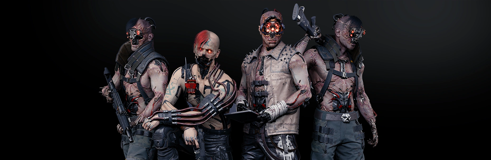
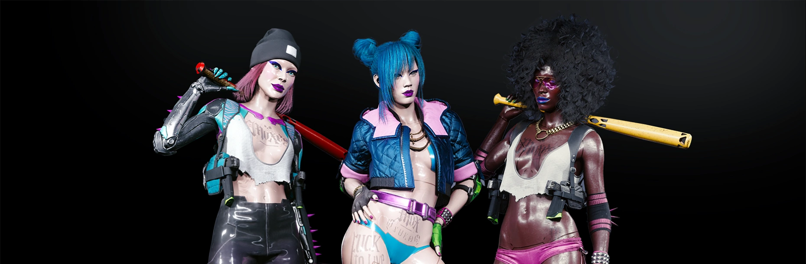
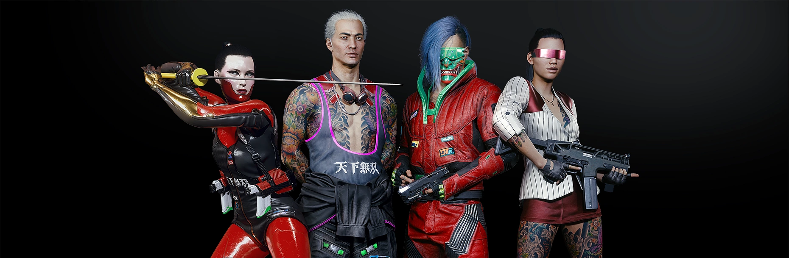
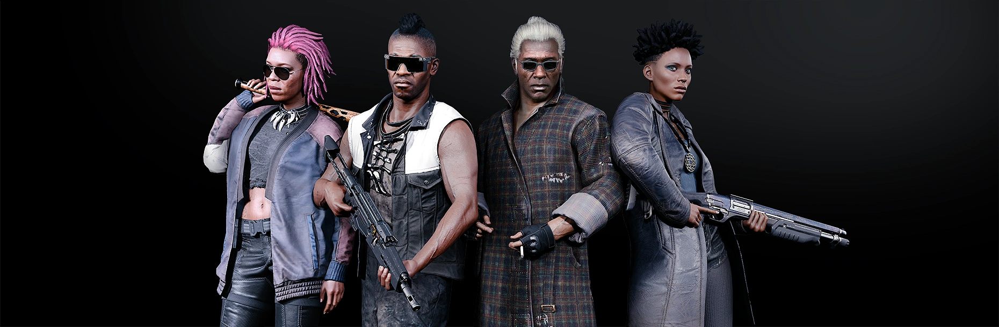
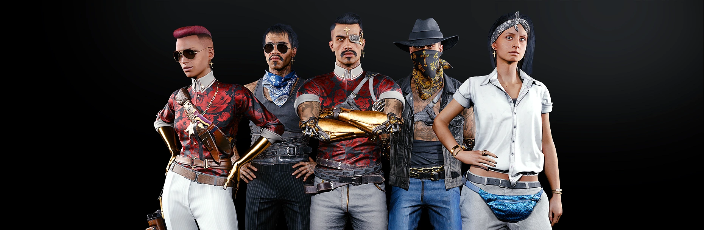
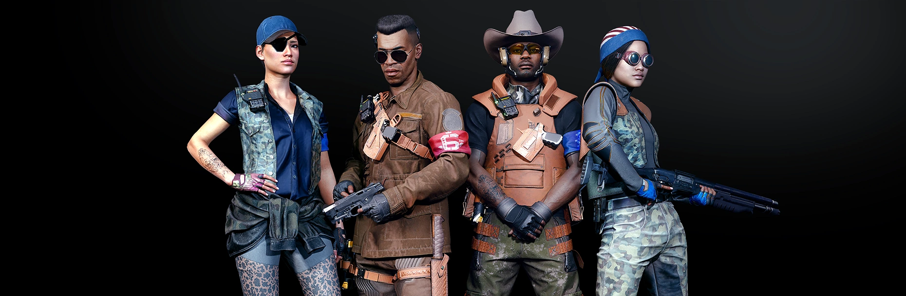
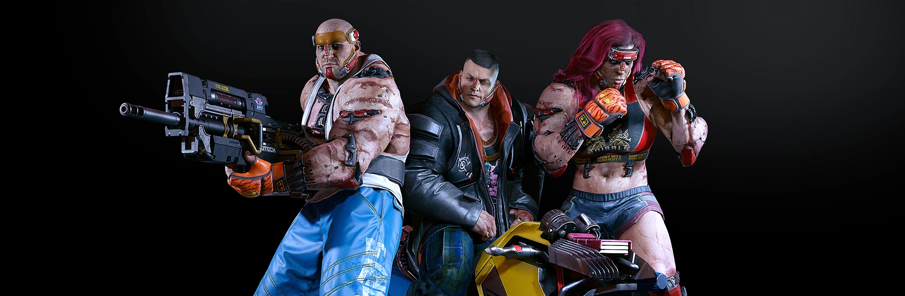

beware of the gangs
By day, the street is the province of corporate movers and commuting beavers. But at night, the predators slither out from under their rocks and trash heaps, and the city howls. Call them gutterats, night crawlers, trash or streetscum; the gangs are the ultimate rulers of the city's night. Whether it's a small pack of a dozen, or an army of two hundred, each gang in Night City is as diverse as the street itself; guardians, chromers, dorphers and freaks, all thrown together in a lethal cocktail, mixed and sprinkled liberally with blood.
MAELSTROM
A gang that controls the districts of Watson and the Northside Industrial District (NID). You can easily recognize them by their intimidating faceplates and hostile optic implants, which not only indicates their gang affiliation but also their fetishization of cyberware and cybermodification.
Looking at Maelstrom, you might think, "Now those are some hella bold pioneers of transhumanism." If they were only testing the limits of the human body on themselves, then you'd be right... Sadly, they also like to conduct "experiments" on those unfortunate enough to cross their path. Maelstrom is known for their exceptionally brutal and public gang executions – combine that with illegal braindance production and a manic fighting style and you've got yourself a gang with a reputation as a band of lunatics on the verge of cyberpsychosis. The truth is there's nothing crazy about how Maelstrom operates – at the end of the day it's all about biz. And the more rumors there are about them, the better.
THE MOX
The youngest established gang in Night City. Its beginnings date back to 2067 when the murder of a sex worker sparked riots that lasted days. The gang formed out of the protesters attracted many others to its ranks for years after.
Mox is a motley crew of current and former sex workers, punks, freaks and all kinds of outcasts. The gang's main headquarters is Lizzie's Bar, a braindance club that serves as the Mox's main source of income. The gang's aesthetic is characterized by aggressive kitsch, loud colors, plastic and latex.
TYGER CLAWS
Night City is a melting pot of cultures and ethnicities, though when it comes to its Asian demographic, the Chinese and Japanese influence is unmistakable – as are the Tyger Claws.
As a gang, the Tyger Claws are well-organized, efficient and savvy – but also unpredictable. Their business decisions are purely rational, but when it comes to their enemies or a disloyal gang member, their methods can be shocking. They mainly operate out of Japantown, Little China, Kabuki and Charter Hill. Their main source of income are nightclubs, casinos, and braindance bars. Night Citizens love to have a good time – no other gang knows how to capitalize on that better than the Tygers.
VOODOO BOYS
A mysterious gang of netrunners based in Pacifica. The Voodoo Boys uphold the district's independence and act as the leaders of the area's predominantly Haitian community. Ominous rumors circulate about the gang – those who know the most about them are netrunners from Night City (at the very least they can recognize a Voodoo Boys virus when it hits their system) and NetWatch agents, who for years have been trying to eliminate them – unsuccessfully, of course.
VALENTINOS
Loud vests, flashy gold cyberware, heavy jewellery, tattoos of Santa Muerte and Jesus Malaverde – you'd have a hard time mistaking a Valentino when you saw one. Inspired by Chicano culture, their expressive style makes them seem like something straight out of a Mexican barrio. But if you look closer, you'll see anyone can join the gang, no matter their background or ethnicity.
The Valentinos are strictly territorial, operating in Heywood. They're tied to the local community by nearly familial bonds of friendship – and by biz. The Valentinos run completely legal businesses like restaurants, nightclubs and auto shops, but all are fronts for their other, dirtier biz of money laundering, smuggling stolen vehicles or guns, human trafficking and gang warfare. Their friendship is priceless – and it will follow you to the grave. So you might want to think twice before riding with them.
6TH STREET
After the 4th Corporate War, a large number of career soldiers were left without jobs or prospects - the most enterprising of them formed the 6th Street Gang. Not only do they boast veterans among their ranks, but also ex-police officers, former corporate security agents and "civilians" who have had a crash course in combat training - everyone and anyone who wants to bring order to this town.
The end justifies the means, and the means usually involve robberies, extortion, arms dealing and stealing cars. Their main turf is in Arroyo, but 6th Street's garages and bases of operation can also be found in other parts of the city.
ANIMALS
Unlike other Night City gangs, the Animals don't have a defined territory. You can find them almost anywhere, but... you know, it's not like people go out looking for them. The Animals aren't a centralized gang – they're divided into smaller groups led by independent "alphas" males or females.
The concrete jungle – for the Animals, it's not just a pretentious metaphor. From their hormone-pumping, beast-inducing implants to their love of street combat, the Animals are obsessed with the wild side of human nature. Their physical strength and proficiency in various martial arts (and their sheer size alone) make Animals the ideal security guards and bouncers for clubs and bars. Besides that, the Animals are known for their illegal brawls, hijacking transports and their addiction to Juice, their very own homemade hormone cocktail.